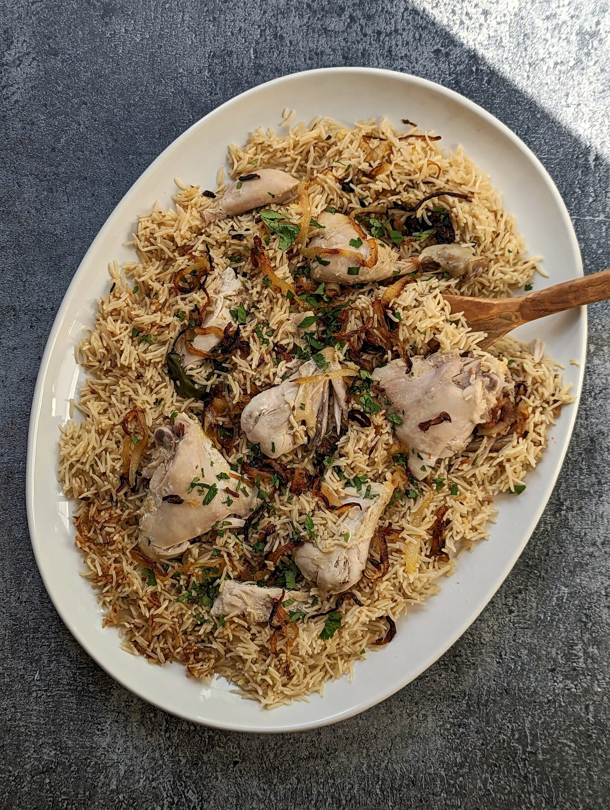

Yakhni Pulao

Description
- Cooked rice (just cooked)
- Chicken pieces
- Gharam masala
- Onion
- 2 tbsp butter/Ghee
- Yogurt
- Garlic and ginger paste
- Potatoes
- Curry spice
- Extra whole spices
- Add whole spices to a hot pan and roast until aromatic.
- Add butter, chopped onion and cook until translucent.
- Add garlic and ginger paste and fine spices to yogurt and coat chicken.
- Add chicken to pot, pour a small amount of water into pan.
- Turn heat to medium and let simmer for 10 minutes.
- Add potatoes and cook until soft.
- Pour everything into baking dish and add rice. Mix well.
- Cover dish with foil and place in preheated 180 deg C oven.
- Cook until rice is just moist, but not dry.